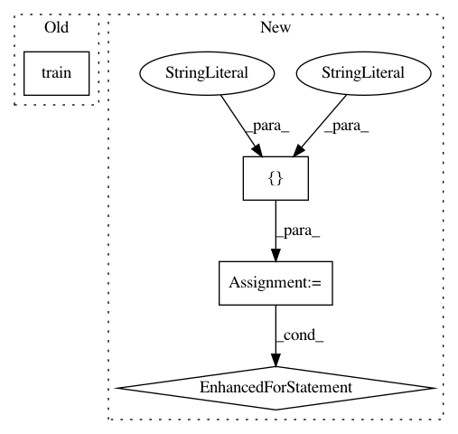

06278c94dd2e9d572840ee2133f0d9b366effaf8,pyannote/audio/applications/feature_extraction.py,,extract,#Any#Any#Any#Any#Any#Any#,92
Before Change
protocol = database.get_protocol(task_name, protocol_name, progress=True)
if isinstance(protocol, SpeakerDiarizationProtocol):
items = itertools.chain(protocol.train(),
protocol.development(),
protocol.test())
After Change
f.attrs["dimension"] = dimension
f.close()
for subset in ["development", "test", "train"]:
try:
file_generator = getattr(protocol, subset)()
first_item = next(file_generator)
except NotImplementedError as e:
continue
file_generator = getattr(protocol, subset)()
for current_file in file_generator:
uri = get_unique_identifier(current_file)
path = Precomputed.get_path(experiment_dir, current_file)
if os.path.exists(path):
continue
try:
// NOTE current_file contains the "channel" key
features = feature_extraction(current_file)
except PyannoteFeatureExtractionError as e:
if robust:
msg = "Feature extraction failed for file "{uri}"."
msg = msg.format(uri=uri)
warnings.warn(msg)
continue
else:
raise e
if features is None:
msg = "Feature extraction returned None for file "{uri}"."
msg = msg.format(uri=uri)
if not robust:
raise PyannoteFeatureExtractionError(msg)
warnings.warn(msg)
continue
data = features.data
if np.any(np.isnan(data)):
msg = "Feature extraction returned NaNs for file "{uri}"."
msg = msg.format(uri=uri)
if not robust:
raise PyannoteFeatureExtractionError(msg)
warnings.warn(msg)
continue
// create parent directory
mkdir_p(os.path.dirname(path))
f = h5py.File(path)
f.attrs["start"] = sliding_window.start
f.attrs["duration"] = sliding_window.duration
f.attrs["step"] = sliding_window.step
f.attrs["dimension"] = dimension
f.create_dataset("features", data=data)
f.close()
def main():
arguments = docopt(__doc__, version="Feature extraction")
In pattern: SUPERPATTERN
Frequency: 3
Non-data size: 4
Instances
Project Name: pyannote/pyannote-audio
Commit Name: 06278c94dd2e9d572840ee2133f0d9b366effaf8
Time: 2017-10-15
Author: bredin@limsi.fr
File Name: pyannote/audio/applications/feature_extraction.py
Class Name:
Method Name: extract
Project Name: r9y9/wavenet_vocoder
Commit Name: 3210d75451d5d78ebe884c712f31800ca1ccd0b3
Time: 2018-01-03
Author: zryuichi@gmail.com
File Name: train.py
Class Name:
Method Name:
Project Name: ray-project/ray
Commit Name: 1d4823c0ec446e93d00df8ca654db4b45b63b3d4
Time: 2020-04-03
Author: sven@anyscale.io
File Name: rllib/agents/dqn/tests/test_dqn.py
Class Name: TestDQN
Method Name: test_dqn_compilation